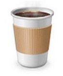

커피의 종류
 |
Espresso는 커피를 원액으로 먹고 입속에 남는 여운을 즐기는 커피이다. 25~ 30㎖를 추출하여 Espresso 잔에 제공한다. Espresso를 제공할 때는 물과 우유 30㎖와 설탕 5g을 같이 제공한다. |
|---|---|
|  Americano |
Italian Coffee를 미국 커피처럼 즐기는 메뉴이다. Espresso에 뜨거운 물을 첨가하여 농도를 흐리게 해서 마시는 커피로, 잔의 크기는 대개 150~180㎖ 잔을 사용한다. Americano는 여러 농도를 즐길 수 있는 메뉴이다. |
Americano |
Italian Coffee를 미국 커피처럼 즐기는 메뉴이다. Espresso에 뜨거운 물을 첨가하여 농도를 흐리게 해서 마시는 커피로, 잔의 크기는 대개 150~180㎖ 잔을 사용한다. Americano는 여러 농도를 즐길 수 있는 메뉴이다. |
Americano |
Italian Coffee를 미국 커피처럼 즐기는 메뉴이다. Espresso에 뜨거운 물을 첨가하여 농도를 흐리게 해서 마시는 커피로, 잔의 크기는 대개 150~180㎖ 잔을 사용한다. Americano는 여러 농도를 즐길 수 있는 메뉴이다. |